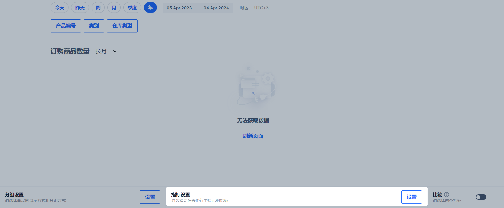
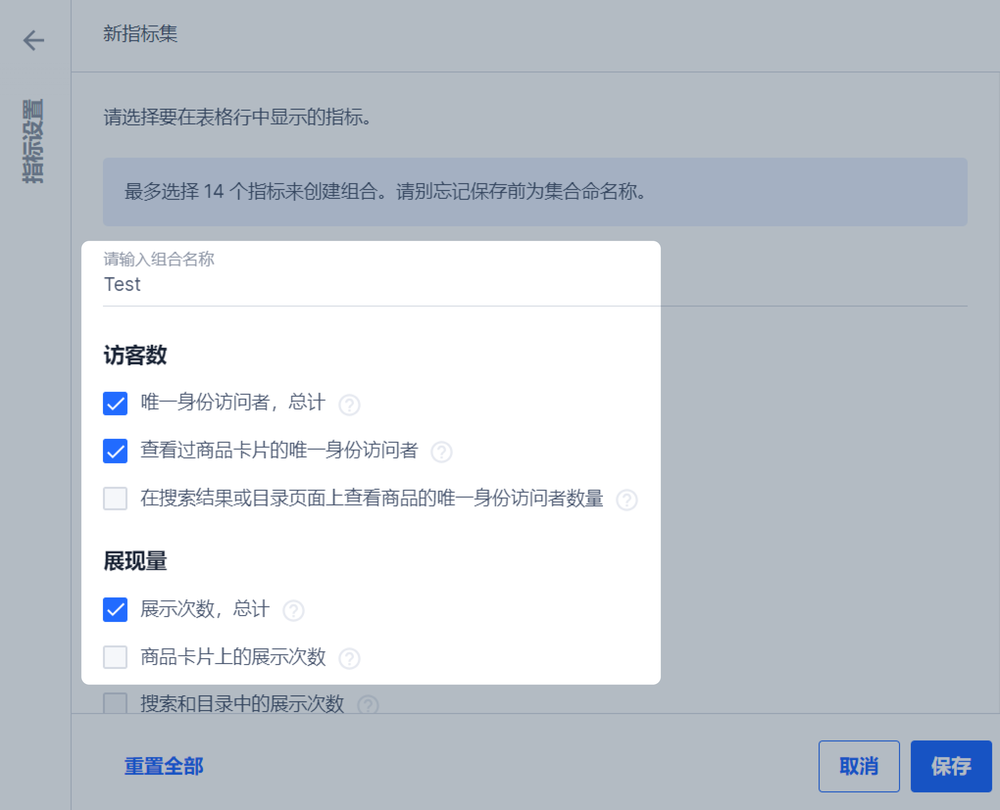
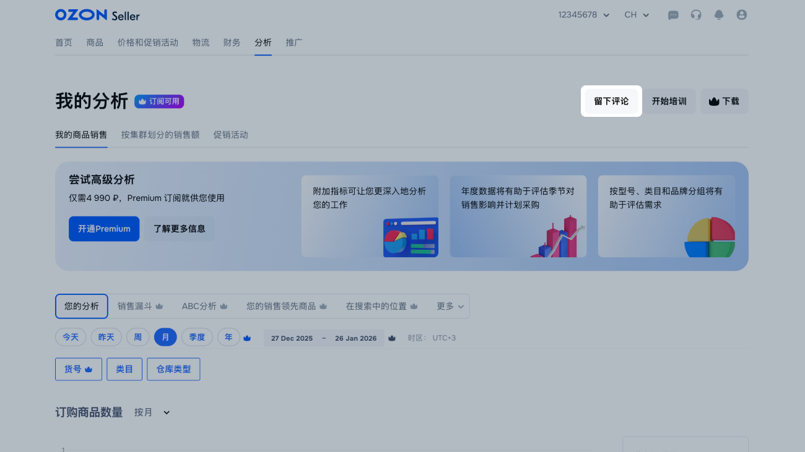
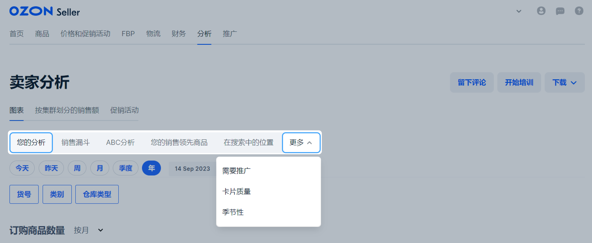
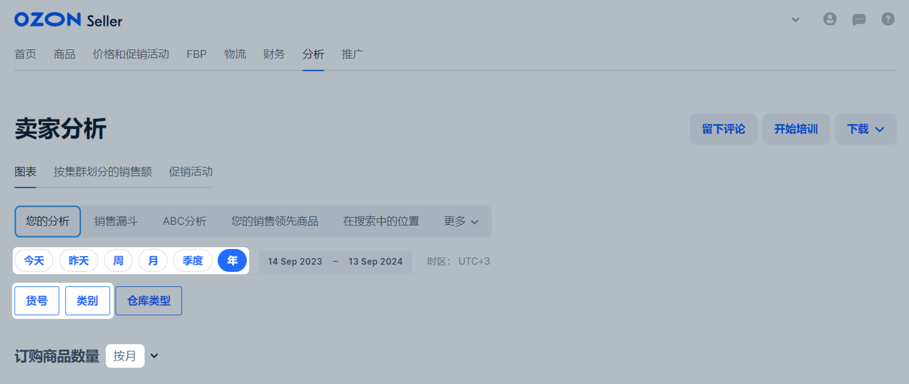
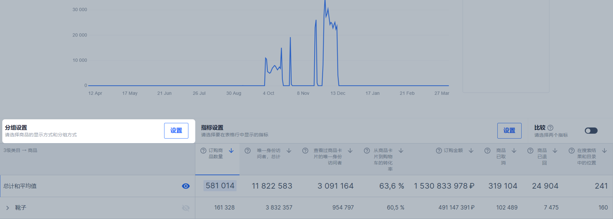
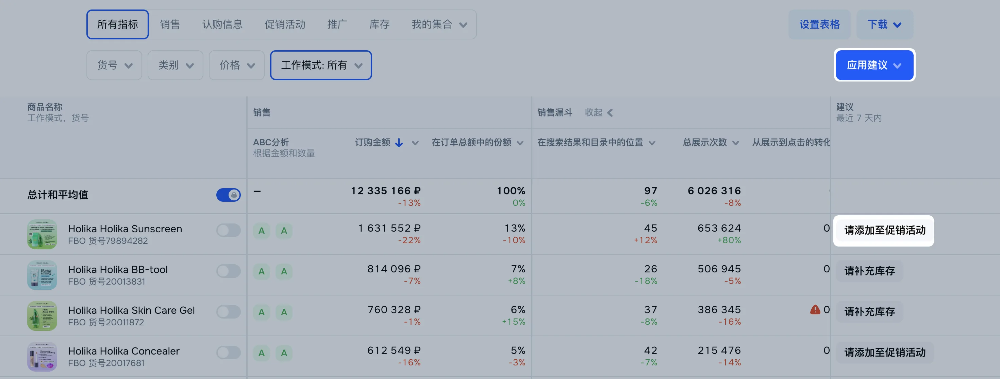
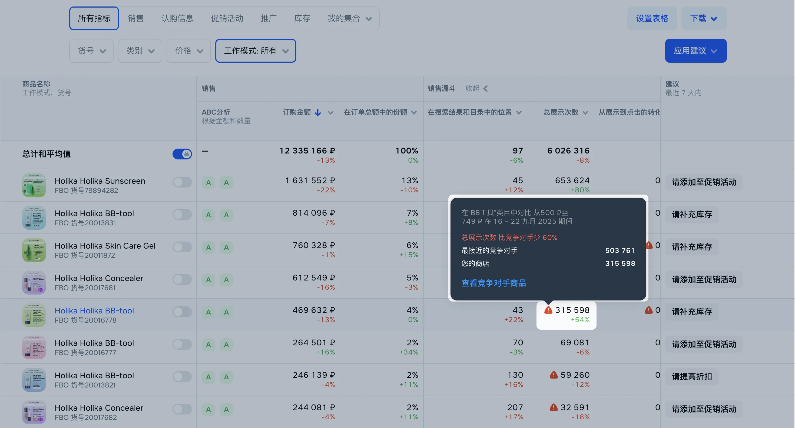

图表仅在订阅了高级分析套餐后可用。
图表是查看您商品广告和销售统计的工具。 通过它，您可以为商品和类目在特定时间段内创建报告。 要构建图表，可以使用系统提供的指标集，或自行创建。
获取图表访问权限
高级分析套餐中的图表功能仅对拥有 Premium 订阅 的账户开放，可供两位具有“分析师”角色的员工使用。“主管”可以在基础角色的基础上为员工分配此角色。
如需为所有员工开通不限人数的访问权限，请订阅 Premium Plus 。
图表基本设置
报告时期 ——可选择今天、昨天、一周、一个月或一个季度的数据。
筛选器 ——针对具有特定特征的商品销售统计：
类目——按商品类目查看销售统计。
仓库类型——按仓库来源查看销售统计，包括 Ozon 仓库、卖家自有仓库以及海外发货。
图表明细 ——按天、周或月显示的详细统计数据。
图标 。将光标移至图表上的特定日期，即可查看该日的指标及与前一日的变化差异。
指标 ——在指定时段内的订单数量及订单总金额。
快速访问 首页 上的主要指标 。数据展示周期为 14 天：您可查看特定日期的总订单数量及其中已完成配送的订单数量。总订单数量包含尚未完成配送的订单。指标按订单发运日期显示。
Premium 订阅下的图表设置
扩展报告时段 ——可查看长达一年的数据，并灵活设置时间范围。
附加筛选器（货号) 。
分组 ——可按类目、品牌、型号对图表中的商品进行分组。
指标 ——可自定义指标集，包含更多维度，如取消和退货商品、商品页访问量及转化率。
如何创建指标集指标集 ——提供商品的详细分析，例如推广需求或客户流失的关键阶段。
指标对比 ——比较两个商品指标。
如何对比指标下载 ——可将按天分组的分析数据以 XLSX 文件格式下载。
首页 图表的额外报告时段 ——可查看本周、最近 7 天或 28 天的已下单商品及已配送商品数据。
建议 ——提供销售增长的个性化建议。
如何生成建议与竞争对手的对比 ——比较您商品与竞争对手商品的关键指标。
比较的指标有哪些
指标
指标是指销售、展示和转化的定量指标。 指标根据其用途分为多种类型。
类型
这些指标显示有关已查看或浏览过您的商品的独立访客的信息。该集合包括以下指标：
独立访客总数 —— 在网站任何页面上浏览商品的独立访客数量。
查看商品卡片的独立访客数 —— 浏览了商品卡片的独立访客数量。
搜索结果或目录中查看的独立访客数 —— 在搜索结果或目录页面上浏览商品的独立访客数量。
这些指标显示您的商品被用户看到的次数。您可以查看不同页面上的展示次数，例如商品卡片或搜索结果和目录页面。该集合包括以下指标：
总展示次数 —— 您的商品在任何页面上出现的次数。如果一个用户看到该商品多次，此指标会增加。
搜索结果和目录中的展示次数 。
商品卡片上的展示次数 。
搜索结果和目录中的位置 —— 商品在搜索结果和目录中的平均位置。计入的位置是筛选和排序后的位置。如果访客未看到商品，则位置不计入。数值越大，商品在搜索结果中的位置越靠后。如果值为“0”，则表示该商品在此期间未展示。
这些指标有助于确定有多少独立访客查看了商品并随后将其添加到购物车中。该集合包括以下指标：
总加入购物车的转化率 —— 将商品添加到购物车的次数与在网站任何页面上查看商品的独立访客数量的比率。
从浏览商品卡片到加入购物车的转化率 —— 将商品添加到购物车的次数与查看商品卡片的独立访客数量的比率。
从浏览搜索结果或目录中商品卡片到加入购物车的转化率 —— 将商品添加到购物车的次数与在搜索结果和目录页面上查看商品卡片的独立访客数量的比率。
这些指标显示您的商品被从网站的不同页面添加到购物车的次数。该集合包括以下指标：
总添加到购物车次数 。
从商品卡片添加到购物车次数 。
从搜索结果或目录添加到购物车次数 。
这组指标显示了具有不同状态的商品的数据。您可以追踪被客户退货或取消的商品数量，并改善这些指标。该集合包括以下指标：
订购商品数量 —— 订购和支付的商品的总数，包括退货和取消的商品数量。
取消商品数量 —— 取消的商品的总数，无论取消原因如何。客户和卖家的取消都计入指标。数据按取消日期分组。
已交付（在所选期间） —— 在所选期间内已交付的商品总数。在送货当天的数据中被计入数据。
已购买（在所选期间已订购商品中） —— 在所选期间内下订单的已购买的商品总数。在订单当天的数据中被计入。
退回商品数量 —— 退回的商品总数。数据按批准退款给客户的日期分组。
订购金额 —— 所选期间内所有订单商品的总价值。
预设集合
指标被组合成主题集合，通过这些集合，您可以快速进行销售分析。 例如，您可以跟踪哪些商品的推广效果最好，哪些销售最佳，或在销售漏斗的哪个阶段潜在客户经常流失。
集合中的指标：
订购商品数量 。
独立访客总数 。
查看商品片片的独立访客数 。
从浏览商品卡片到加入购物车的转化率 。
订购金额 。
取消商品数 。
退回商品数 。
搜索结果和目录中的位置 。
图表根据一个月内的 订购商品数量 指标绘制。 数据在表格中按 3级类目 → 商品 分组。
该集合将帮助您分析用户从搜索商品到下订单的过程。为了追踪您在哪个阶段失去了最多的潜在买家：
查看从一个购买阶段到另一个购买阶段的潜在买家的转化率。
确定哪些阶段之间的转化率最低。
集合中的指标：
搜索结果和目录中的展示次数 。
商品卡片上的展示次数 。
从商品卡片添加到购物车次数 。
订购商品数量 。
订购金额 。
图表根据一个月内的 订购商品数量 指标绘制。 数据在表格中按商品分组。
该集合显示了哪些商品销售最好，并为您带来了大部分营业额和订单，哪些商品销售较少。 ABC分析将帮助您确定哪些商品可以进行推广并补充库存，哪些商品最好更换为更有利可图的商品。
报告中的信息：
A类商品 —— 对于商品种类至关重要的商品，它们带来了大部分的营业额或订单。请继续保持这些商品的库存，并进行推广，以吸引更多的买家。
B类商品 —— 具有中等指标的商品。这些商品可以保持营业额和订单数量，例如当A类商品在库存中耗尽时。通过提高质量、商品页面或进行推广，这些商品可以转移到A类商品。
C类商品 —— 带来最少营业额的商品：可能很少购买或由于质量较低经常被退回。为了更好地销售商品，请提高它们的质量（如果您是制造商），或者尝试进行推广（如果此前未对该商品进行过推广）。
订单数量和营业额可能会受到季节性因素的影响。新商品在销售初期始终属于C类，因为订单数量较少。
集合中的指标：
订购商品数量 。
按订单ABC —— 订购频率最高的商品属于A类。
订购金额 。
按营业额ABC —— 带来大部分营业额的商品属于A类。
图表根据一个月内的 订购商品数量 指标绘制。 数据在表格中按商品分组。
该集合包含了过去7天中最常购买的商品数据。通过此指标集合，您可以：
跟踪过去7天内最畅销的五种商品的销售情况；
决定哪些商品需要额外的推广，以维持高销量。
集合中的指标：
订购商品数量 .
订购金额 .
图表根据一个月内五种最畅销商品的 订购商品数量 指标绘制。 数据在表格中按商品分组。
该集合将帮助您评估您商品在搜索结果中的排名位置对其销售的影响。 通常情况下，排名较低的商品销量较差。使用该集合来：
发现可能成为销售领先者的商品：它们具有高订单量，但在搜索结果中的排名较低。通过额外的推广可以提升这些商品在搜索结果中的排名并增加销量。
找到在搜索结果中排名较高但销量较低的商品，并对商品卡片和商品质量进行调整。
集合中的指标：
搜索结果和目录中的展示次数 。
搜索结果和目录中的位置 。
订购商品数量 。
图表根据一个月内最畅销商品的 搜索结果和目录中的位置 和 订购商品数量 指标绘制。 数据在表格中按商品分组。
使用该集合，您可以找到点击量和商品卡片浏览量较高，并且从商品卡片到购物车的转化率较高的商品。 建议对这些商品额外进行推广，以便更多潜在买家看到它们。
集合中的指标：
搜索结果和目录中的位置 。
独立访客总数 。
查看商品片片的独立访客数 。
从浏览商品卡片到加入购物车的转化率 。
订购金额 。
图表根据一个月内的 独立访客总数 指标绘制。 数据在表格中按商品分组。
该集合显示了浏览商品卡片后将其添加到购物车并下订单的买家数量。 如果转化率低，为了吸引更多买家，请改善商品卡片。
集合中的指标：
查看商品片片的独立访客数 。
从浏览商品卡片到加入购物车的转化率 。
订购商品数量 。
订购金额 。
图表根据一个月内最畅销的一种商品 查看商品片片的独立访客数 和 订购商品数量 指标绘制。 数据在表格中按商品分组。
该集合有助于确定需求在哪些月份增长或下降，并提前计划商品的采购或交货。
集合中的指标：
订购商品数量 。
订购金额 。
图表根据一年内的 订购商品数量 指标绘制，按月份细分。 数据在表格中按 3级类目 → 商品 分组。
如果您在预设指标集中没有找到适合的，请创建自定义的指标集合。
创建集合
在 分析→ 图表 标签页的 指标设置 模块中，点击 设置 。

点击 添加指标集 并指定指标集的名称。
选择您想要添加到集合中的指标。最多可以选择 14 个指标。在表格中，指标将按照您选择它们的顺序显示。

点击 保存 。
提议指标集
如果您认为您的指标集可能对其他用户有用，请您建议将其添加到预设指标集中：点击 留下评价 并说明该集合应包含哪些指标。

绘制图表
打开 分析→ 图表 标签页。 您可以绘制以下类型的图表：
按预设指标集 —— 在页面上选择它；

按自定义指标集 —— 在 指标设置 模块中点击 设置 ，选择先前创建的集合，然后点击 应用 。
调整数据显示选项：
选择要查看的期间；
根据商品货号和类目筛选数据；
设置数据显示间隔 —— 按天、周或月。

在表格中，点击您想要绘制图表的指标名称。
选择商品的显示方式和分组方式：在 分组设置 模块中点击 设置 。选择分组方式，然后点击 应用 。
商品分组方式有哪些
按 3 级类目分组的商品 —— 分析将包含三级类目商品的数据。例如，商品“女式毛衣”的二级类目为“女装”，一级类目为“服装”。
按品牌分组的商品 —— 图表将显示按品牌分组的所有商品。
按所有类目级别分组的商品 —— 商品将按一级类目分组。请展开它们以查看嵌套的子类目和商品。
按2级类目和品牌分组的商品 —— 商品将按照二级类目分组，品牌和商品都将被嵌套在内。
按型号分组的商品 —— 将按型号分类显示商品。
仅限商品 —— 每个货号将单独显示，不分组。

默认情况下，图表显示 总计和平均值 行的数据。要在图表上添加其他行的数据，请单击类目名称旁边的 。 要查看特定日期的指标和与前一天的差异，请将鼠标悬停在图表上。
指标数据每小时更新一次。
比较指标
您可以在图表上比较两个指标：在数据表上方启用 比较 功能。
默认情况下，图表比较的是用于绘制图表的指标。要选择第二个比较指标，请将鼠标悬停在名称上并点击 比较 。新的指标将以虚线形式显示在图表上。 要从比较中移除指标，请将鼠标悬停在其名称上并点击 从比较中移除 。
针对商品的建议生成
我们为每个商品展示最优先级的建议。

若您已按照建议执行操作，且商品指标达到竞争对手水平，原建议将替换为新建议或直接移除。
建议生成逻辑如下：
优先级 |
建议内容 |
建议原因 |
|---|---|---|
1 |
添加到促销活动中 |
商品未参与“弹性提升”促销活动。 |
2 |
提高折扣 |
• 商品折扣低于竞争对手。 • 价格指数 不利 或 中等 。 • 指标 展示总数 和 从展示到点击的转化率 低于竞争对手。同时，该商品已开启按点击付费的推广，且广告费用份额不低于竞争对手。 |
3 |
启用推广 |
商品尚未开启按点击付费推广。 |
4 |
提高广告费用份额 |
• 广告费用份额 低于竞争对手。 • 展示总数 低于竞争对手，但商品已开启按点击付费的推广。 • 促销活动中的周转份额 低于竞争对手，但商品已开启按点击付费的推广，并且本周参加了促销活动。 • 推广天数 少于竞争对手。 这些指标旁带有标记： 。 |
与竞争对手的比较
我们会将您的商品指标与竞争对手的商品指标进行对比。若竞争对手的平均指标高于您的商品指标，表格中对应数值旁将显示红色标识符 。将鼠标悬停在标识符上，可查看详细说明。

表格中与竞争对手对比的指标如下：
参与促销活动的天数 ——所选周期内商品参与促销活动的天数。
折扣 ——所有已售商品从最高价格到促销价格的平均折扣金额。
促销活动中的周转份额 ——所选周期内促销订单金额占同期总订单金额的比例。
促销商品订购金额 ——所选周期内通过促销活动产生的订单总金额。
展示总数 ——商品在平台所有页面的总展示次数。
从展示到点击的转化率 ——商品在平台所有页面的展示次数与订单数量的比值。
广告费用份额 ——推广费用占商品销售金额的百分比。
推广天数（按点击付费） ——所选周期内商品开通在搜索结果中按点击付费推广的天数。
竞争对手商品的分析筛选规则
选择与您商品属于同一类目、同一价格区间的所有商品。
按指标 订购金额 排序。
按订单总额分组：
领军者，
前 1%，
前 10%，
前 50%，
低于 50%。
确定您的商品所在分组。
将您的关键指标与基准组的平均值进行比较：
您的组别 |
对照组别 |
|---|---|
低于 50% |
前 50% |
前 50% |
前 10% |
前 10% |
前 1% |
领军者 |
前 1% |
如果您的商品暂无销售，我们将按照相同逻辑，仅按类目划分组别进行比较。
系统会显示哪些指标与销售量更高的竞争对手存在差异。
下载报告
点击 下载 并选择报告类型：按期间或按天。 按期间的报告是没有按天细分的总数据，按天的报告是期间内每天的数据。按天的报告需要更长的时间生成，因此不建议选择超过两周的期间。
要查看生成的报告列表及其状态，请点击 下载 → 打开下载管理器 。 您还可以稍后在下载管理器中下载报告。
如果在生成报告时发生错误，请稍后再尝试下载。
报告将在下载管理器中保存 90 天。